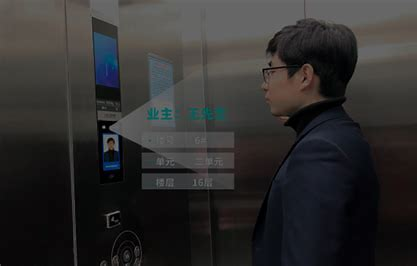
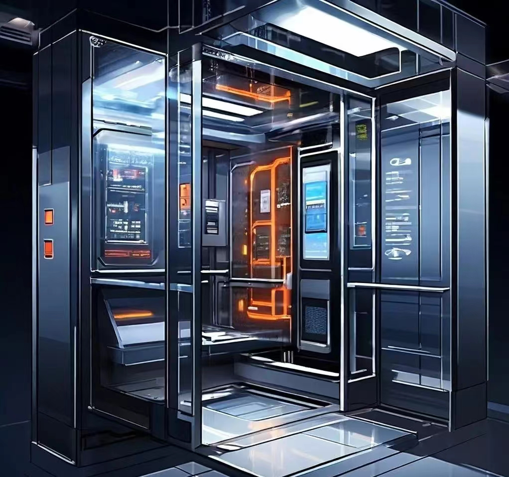
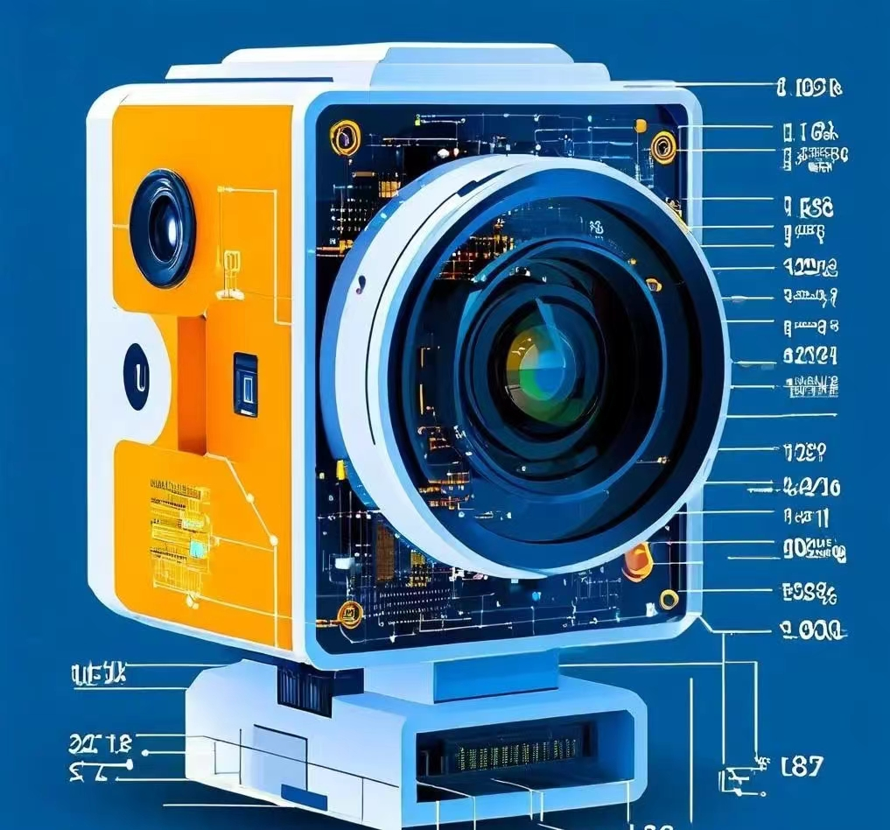

产品介绍 / 设计理念
Again智能化电梯在“新质生产力”理念下，集合了复合神经网络技术、AI大数据模拟训练及人工智能算法，为现代都市生活提供了安全、舒适、高效的垂直交通解决方案。同时，电梯还配备了多重安全防护系统，确保乘客在使用过程中的安全。

目标人群
用户群体： 智能化电梯的用户群体广泛，主要包括以下几类: 1.高层建筑的居民:随着城市化进程的加速，越来越多的高层建筑拔地而起，智能化电梯为这些居民提供了便捷高效的垂直交通方式。 2.商业综合体与办公楼的用户:在商场、酒店、写字楼等商业综合体中，智能化电梯能够大幅提升工作效率和客户体验。 3.医疗机构与公共交通枢纽的乘客:在医院、火车站、机场等公共场所，智能化电梯能够满足大量乘客的快速出行需求。

智能or识别
AI/RECONGNITON
为保障社区人员安全和便利，防止外界闲杂人员甚至危险分子随意进入社区
本产品采用了人脸识别的技术设想，将运用深度学习算法和识别对社区人员和管理人员的信息录入，在乘坐电梯时进行验证，一次保障社区的安定

设想竞争
竞争对手分析： 竞争对手拥有较为成熟的技术体系和市场份额，对智能化电梯的发展趋势和用户需求有深入的了解。但我们的智能化电梯在以下几个方面具有竞争优势:
1.技术创新:技术部成员不断追求技术创新和突破。通过引入先进的人工智能算法和物联网技术，我们的电梯产品在性能、效率和安全性方面均处于领先水平。
2.定制化服务:我们注重用户需求的多样性和个性化，能够根据不同用户的实际需求提供定制化的电梯解决方案。这种定制化服务能够更好地满足用户的特殊需求，提升用户满意度。
3.品质保障:我们始终坚持质量第一的原则，从生产过程再到售后服务，都严格把控品质。这种品质保障能够确保电梯的稳定运行和长寿命，降低用户的维护成本。
进阶之视觉识别
系统首先构建一个包含居民和已知罪犯高质量面部图像的全面数据集，作为训练阶段的基础。在训练过程中，通过反向传播算法对CNN进行参数优化，提高其从输入图像中提取复杂特征的能力。
CNN的多层卷积结构使其能够逐步从原始像素数据中抽象出复杂图案，捕捉到包括纹理、形状、颜色在内的关键特征，以及更深层次的属性。这些特征被量化并用于构建判别性强的特征空间，为区分不同个体提供依据。 完成训练后，系统部署在实际的电梯监控环境中。当有人进入电梯时，车载摄像头捕捉其实时图像，并交由CNN处理。网络细致地比较捕获的面部特征与数据库中已存储的特征，识别出可能的匹配项。 为确保系统的可靠性和稳定性，还引入了多种安全增强措施。例如，实施活体检测机制以防伪造攻击，同时采用多因素认证框架结合指纹扫描、身份证验证等其他身份验证手段，提供额外的安全保障。
未来设想/项目景愿
项目愿景： Again智能化电梯项目，“over and over again”意为“来来回回”“，我们秉承“安全、智能、进步”的核心价值，保障“上下来回”，同时一直“再进步”，致力于通过技术创新和服务优化，为城市居民提供前所未有的出行体验，让智能化电梯成为现代都市生活的重要组成部分。